00:00:00 · 0.500s
大家好,我们现在进入支撑与阻力的一个金奖 我这边加了一个支撑与阻力的测试 原因是因为一个测试一字之差可以完完全全改变你的这个观点 因为如果你一旦用支撑和压力 他就总是脑海里面觉得这个地方就一定会有支撑 一定会有压力 好像是一个百分之百确定性的事件
画面保留原分辨率；时间来自实际解码 PTS。附近语音是自动识别候选。点击画面可查看原图。
大家好,我们现在进入支撑与阻力的一个金奖 我这边加了一个支撑与阻力的测试 原因是因为一个测试一字之差可以完完全全改变你的这个观点 因为如果你一旦用支撑和压力 他就总是脑海里面觉得这个地方就一定会有支撑 一定会有压力 好像是一个百分之百确定性的事件
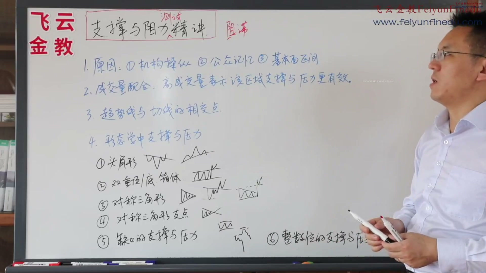
就是它的一个阻滞 就是它有可能 不是叫阻止 有可能到了这个地方 它会形成一个阻力 然后滞就是停在那边 我觉得这个说法也是挺好的 一个叫阻滞 就是一个阻在那边 然后滞留在那边 但是一旦它有可能选择突破 也有可能选择向下 我们谁都不知道 看您自己喜欢哪一个 好 我们首先来看 为什么会形成支撑与压力 首先看什么是支撑与压力 这个很简单 我们有几个地方 一个是点位 比如前期的高低点 这里面有低点形成的 那么再次跌到这个点位的时候 就有可能形成一个 它的这个支撑测试 同样的道理 在这儿这儿涨到这个点位 回调再次涨到这个点位的时候 就有可能会形成一个压力测试
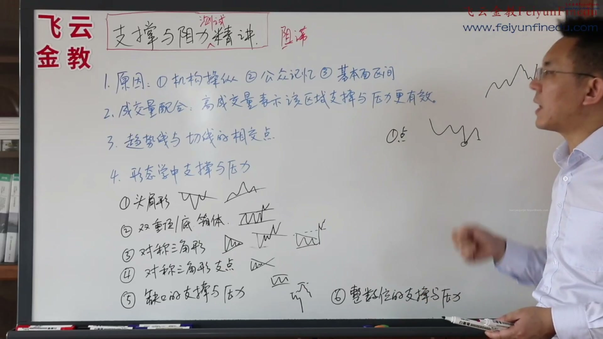
就是说机构有可能在这个地方 为什么会涨起来 一个点位到这个地方形成低点 那绝对不是什么 绝对不是偶然的 一定有原因 要么这个地方卖单衰竭 没有人卖了 要么有可能有机构认为这个点可以吸货 他去买入了 也有可能有其他的各种原因 基本面这个地方已经到头了 大家认为这个地方没有办法了 也有可能是前期的支撑与压力位置 总之它一定不是纯粹偶然事件 那么既然第一次不是纯粹偶然事件 第二次到了这个点位 它也有可能不是纯粹偶然事件 那么它有可能是机构操作 机构本身的吸筹就在这个区域 那么所以它到这个区域 它会继续进行吸筹 也有可能这个公众记忆 就大家呀 总是能够记住 前高前低一些地点 他对这中间的一些位置啊
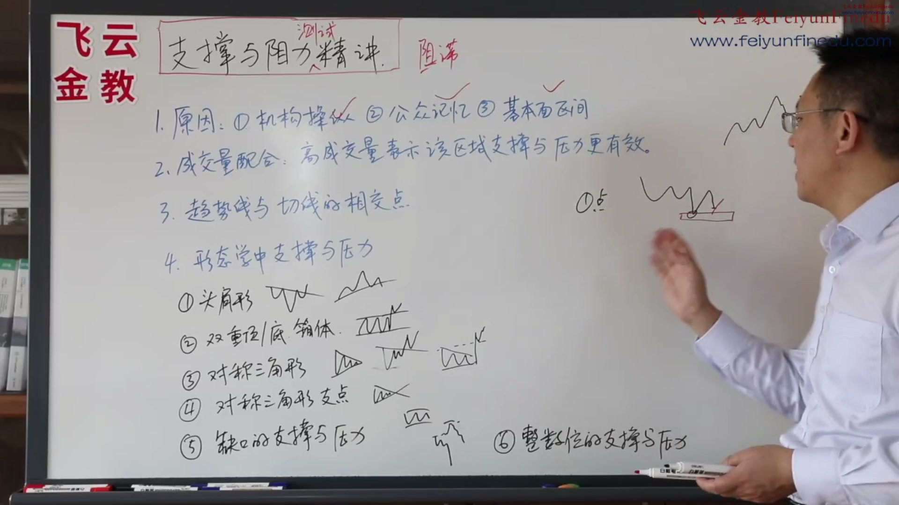
第三就是基本面的区间 就是说这个和技术没关系 也有可能本身这个股票的价值低挖到了 或者这个期货品种 他本身已经到了低无可跌了 他的这个价值就指这个价 啊 他就我们说 以前说不肯跌到低 现在石油都跌到零了 我们假设石油 没有不可能跌到零的情况下 它只要值零 基本面向区域 好 这是三个原因 构成它到了前期的高低点 前期的一些量能的一些累积点 前期的一些支撑压力点 它可能会形成支撑与压力 好 一个最重要的一个东西 支撑和压力的互换 互换 就是什么呢 这个地方很简单 你看以前是一个形态 形态被突破之后 以前的这个本来是一个压力的地方
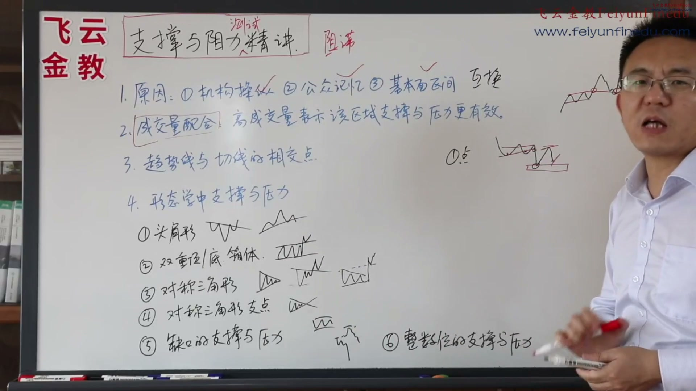
他在这个点位有可能会形成支撑 一旦被跌破回调到这个区间 就会形成压力 所以压力与支撑互换 大量大量的存在 你们去复盘的时候看到 我给大家复盘了很多 PPT里面 你们可以去看 我们不举例子 好这是第一个 第二个是成交量要配合 一般的高的成交量 就表示该区域的支撑压力更有效 其实这个就是我在PPT里面讲的 叫成交量累积区和筹码累积区 往往会对将来形成很大的支撑与压力测试区 这个我在PPT里面有讲的 第三趋势线与切线的交相交点 这个呢我PPT里面有讲 因为我个人觉得 其实不是很有道理啊 但是呢 有一件书里面有啊 是按照书先给大家讲 它这个什么意思呢 它的意思是这样子的啊
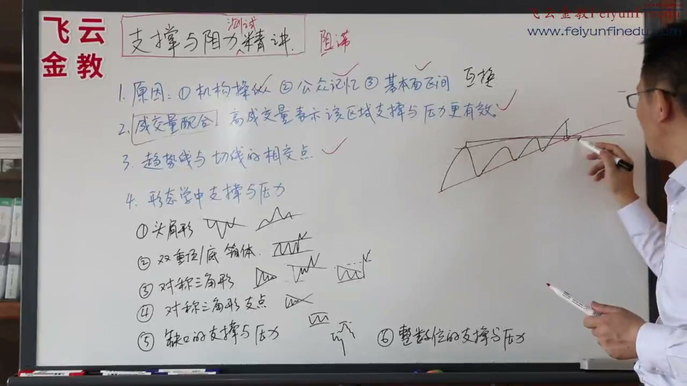
它可能会有一个收敛啊 比如这个地方比较大 好 那么这个趋势线 下面会有一条趋势线 这边有一条上涨的这个趋势线 切线 两个切线的交叉点 这个书里面认为 它可能会形成以后的 非常强大的一个支撑点 这个我觉得 你要是说趋势线的一个点 和前面的支撑压力这个区域 这个区像我们平时做交易 准划的区形成一个点位 还有点道理你如果完完全全 是两根线的交叉点 你说这个这样的有支撑压力 我个人觉得这个逻辑上说不通 你线就是线嘛你线怎么会 形成这个压力点呢 所以我还是觉得就是直接用 这个支撑用压力它的量能区 高低点直线 这个可能会更有道理 一点啊这个它碰触的点
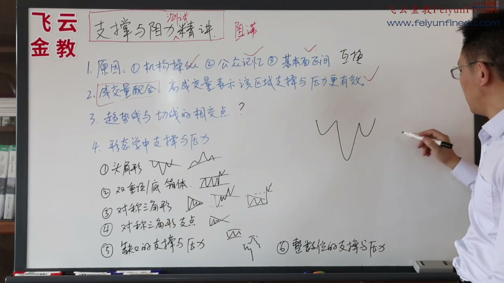
好 第四 书里面讲了一个叫 形态学里面的支撑压力 当然它就是分的比较细的 我们还没有讲形态 但是呢 如果大家是看我们以前PPT的节目 那么现在就知道了 怎么回事了 如果没有看我PPT的节目 我这边就简单跟大家说一些 形态啊 当然 首先最重要的是头肩形态 头肩形态 头肩底还是头肩顶 不管哪一个头肩形态 最重要的是颈线 是不是 颈线 好 他说的颈线只要一被突破 那么这个颈线就会形成一个支撑 好不好 好 这个支撑啊 一旦回测再往上啊 就明确的表示支撑确认 这个没有什么问题啊
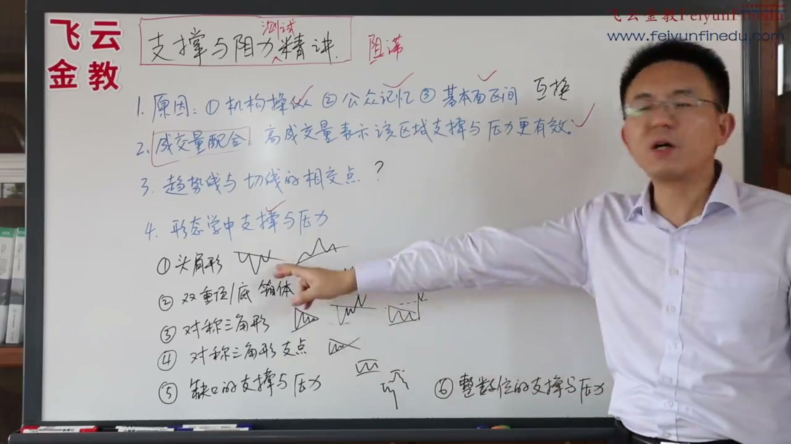
正好如果它是一个逆势突破 又跌回来了 跌回来 那么再往回来的时候 颈线就会形成压力 这个我觉得也是很正常啊 这个没有什么 颈线形成压力再往下跌 那么就成为箱体了 就会成为一个倒三角啊 好 这就是 这就是一个 颈线的 头肩形态的支撑与压力 主要是看颈线 这个很好理解 因为有的时候 它的颈线是直的 这个直接就可以形成支撑压力 这个很简单 是不是 但是如果它是斜的 那么颈线 斜的颈线也会形成 它的一个降低的压力 大家知道就行了 好 这是第一个 第二个就是我们的双重底 双重底 其实所谓的什么双重底
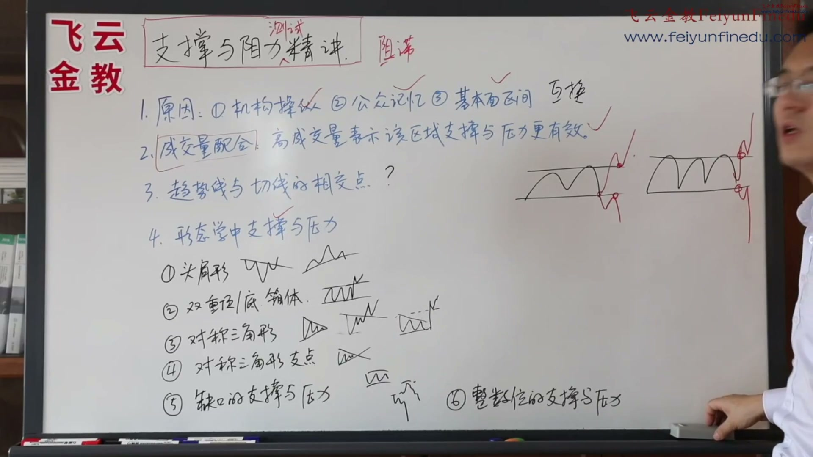
就是上沿下沿 跌破下沿回抽 变压力 是不是 突破上沿回撤 再往上变支撑 不管你是几重底 都是这样子 突破上沿回抽 成功变支撑 跌破下沿回抽 确认变压力 都是这样子 这个很简单 支撑于压力的互换 在这个双重底 双重顶 以及箱体里面的运用 好我们再来看对称三角形 它把这个三角形分为对称三角形 其实我们主要是对称三角形和直角三角形 我们后面也会讲一点点 具体讲形态的时候讲 对称三角形 它中间有个很意思的观点 就是说基本上是这样子 对称是这样子的 比如上升 这样子 基本上两条边是一样的 这个角度是六十度
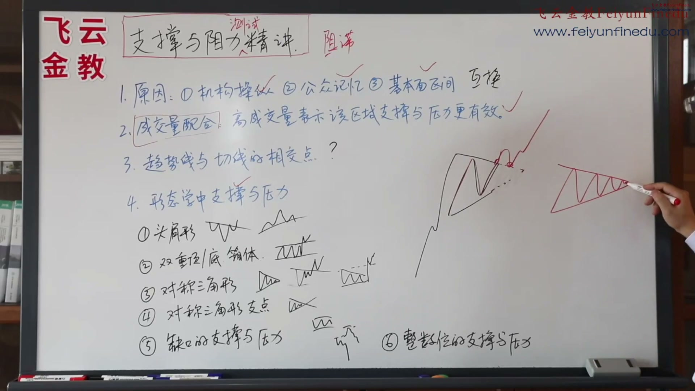
如果这个三角形没走完 刚走到这儿 就已经像个对称三角形了 这边还没走完 但是你知道它是对称三角形 所以它是个虚线 没走完 突破上去 那么它的支撑在哪儿 回抽会在这个虚线上 就是你的趋势线上获得支撑 往上 这是这个 那么如果一个对称三角形走完的 顶点走完的 那么上去 它的 它认为支撑是在这儿 它会不会在这儿来获得支撑 再往上 大概它认为是这样子一个意思 我觉得这个其实很好理解 我觉得大家能不能理解 为什么对称三角形没有走完 它的这个支撑会在这儿 而它走完了支撑却变到前面去了 为什么
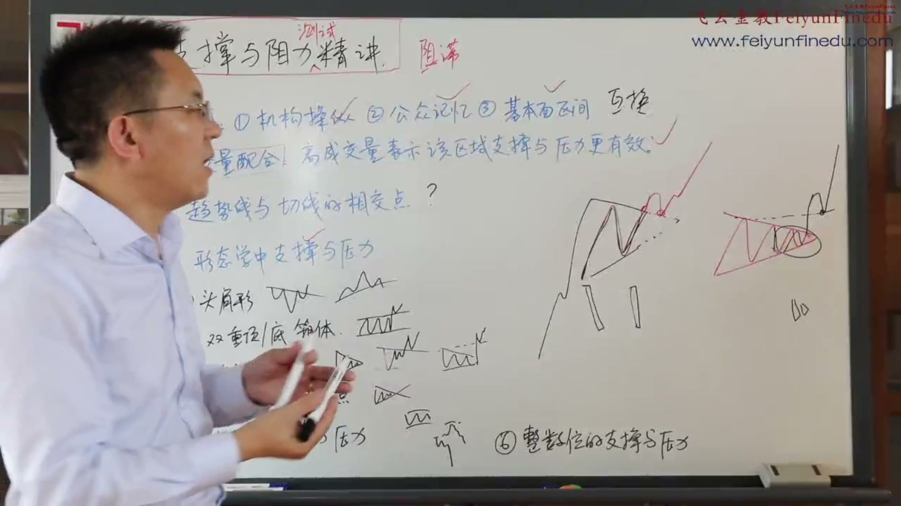
它的这个量价配合 你这种小的地方 它的量肯定会缩得很厉害 那么你这种量区 这个区间量很小的地方 就不能构成支撑与压力 所以说到底 还是看量 是不是 还是看量 所以他这个方法 其实还在看量 我觉得这个方法 其实超级的好理解 特别是它 它就更好理解了 因为它离这个前期的这种高点这么近 又是一个触点区 那么在这很好理解 就是这个到前面 大家注意一下 我知道了 我不需要等到回调到这 我再去买 我到前面 它的这个三角形 等边三角形的端点 我就可以做一个买入 如果是我们遇到信号 好 这就是我们的等边三角形
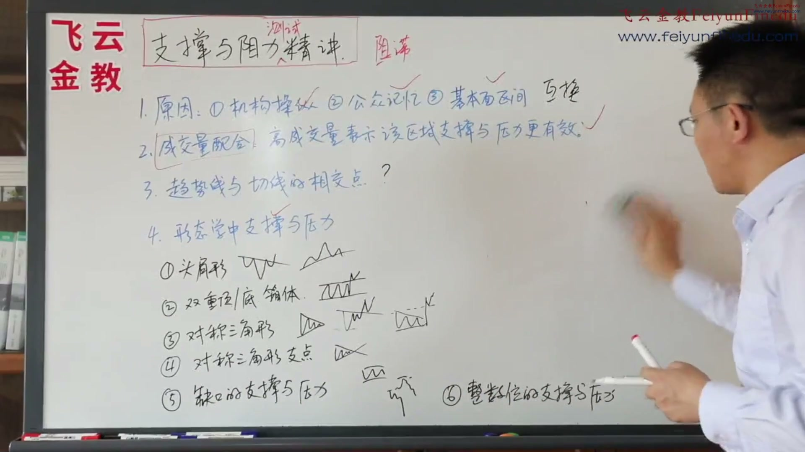
它是直的 那么突破 它的回抽 它的支撑肯定在这 在向上是不是 往下跌也是 它只要是个直角 跌破 往回抽 阻力肯定在这 这是毫无疑问 这个很简单 它和箱体和这个头肩都差不多 好 他在这个爱德华他们书里面呢 还提了一个观点 我觉得有点意思 但是呢我个人觉得实在里面 这些都很有用很有用很有用 但是这个这个就不太一定了啊 他说的是对称三角形的支点 比如你上去啊 对称三角形 你把它这个将来画长 这个支点 这个支点的这些位置 你假设 走走走 将来可能也会形成一些支撑与压力
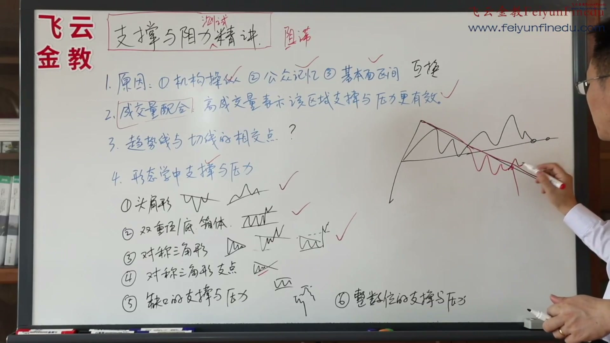
趋势线也有可能会形成一些支撑与压力 是不是 它其实就是一个趋势线的外延 这个也没有什么 我觉得也没有什么可单独列出来的 只不过就是唯一的 我就是觉得你的趋势线 它管它有没有支撑 或者是管它有没有压力 因为我们的交易系统 又不是靠你的趋势线 上面有支撑我去买入的 我不是靠这个是不是 我只是说趋势线如果突破了 我可能根据形态 我进行顺势的买 我趋势线跌破了 我根据形态顺势的卖 所以它这个三角形的支点延伸 它有没有支撑我压力 我觉得一点都不重要 但是由于那个书上讲了 所以我们还是把它单独拿出来 好 这是我们的对称三角形 还有缺口的支撑压力
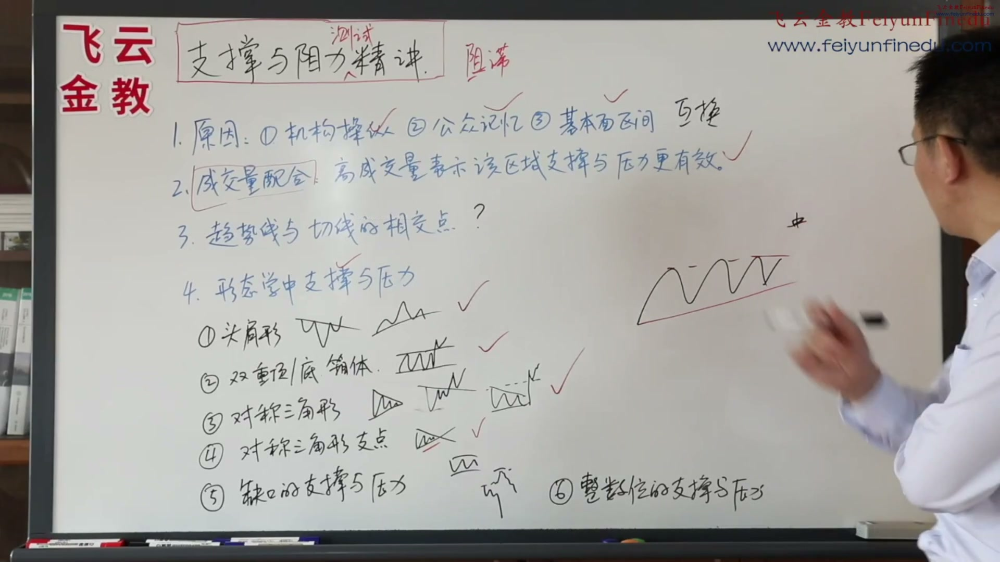
商品期货就会知道 我们举个例子 假设这是一个商品期货也好 是个股指也好 它的这个区间盘整 当它突然突破这个区间 今天开盘价 就是一个缺口在这 好 缺口在这 第一根五分钟K线往上涨 你是做还是不做 如果你以前不懂技术 当年像我们不懂的时候 很害怕 就开始还害怕 不但不敢去做 还要反着去空它 觉得前面是不是有压力了 我要去空它 往往越空它怎么样 涨越高越空涨越高 所以请大家一定要注意 只要有缺口 坚决的往缺口方向做 错了就在这个缺口的下沿 设置损 缺口然后开始回补 缺口开始回补
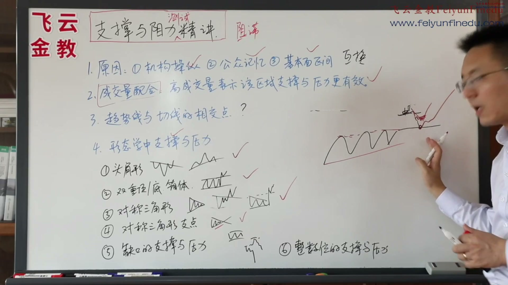
如果这个中间有我们双突破的机会 我们就开始做了 那么如果中间没有 就等它跌到上边缘 然后我们再做一次 这些缺口的回补的上边缘 往往就是你开空的一个开 就是如果是向上跳 向上的一个缺口 那么回补的时候 就是一个最好的 你去做的一个机会啊 当然啊 这个又要分为是突破型缺口 中继型缺口 衰竭型缺口 衰竭型缺口就千万不要做了啊 就后面我们再讲缺口的这个讲 这个只是针对什么 针对突破型缺口和中继型缺口 中继型缺口 这两个缺口你这么做是绝对准确的 好 这是我们的缺口的支撑与压力的部分
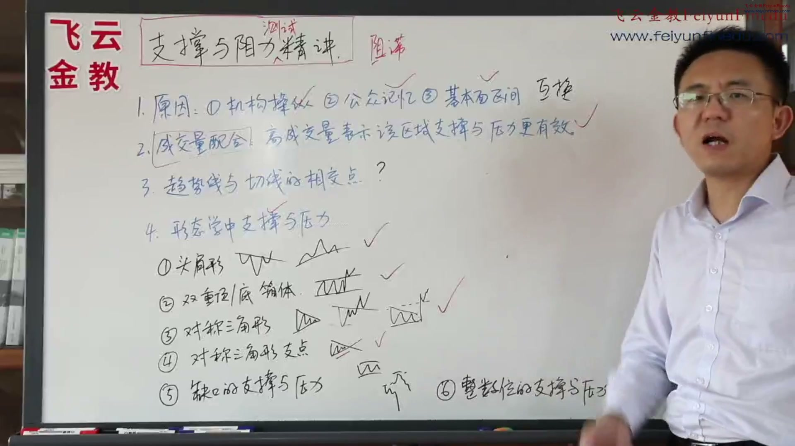
整数位的支撑与压力什么意思呢 就是说有些有些品种啊 比如到了二十三十五十一百 它可能会构成一个支撑与压力 这个你们就注意一下行吗 其实这个在江恩的书里面呢 在一些其他人书里面也提出过 但是具体上 我个人好像在实战里面 不是怎么用 我个人在实战里面 就是用这几个 我就觉得够了 这个地方 它如果有只 比如最近的上阵3000 那你非要认为3000就有牙利兰 然后你就走了 实际上三千以后 一下出汗去了 是不是 所以到这个有和没有都没什么关系 只不过是数人提的 好 这就是我们所有的支撑与压力的一个金奖 我们在PPT里面讲过他们形成的原因 大家可以看 我这边就不再讲了 我们这里面就是讲了一些 他的趋势相应切线
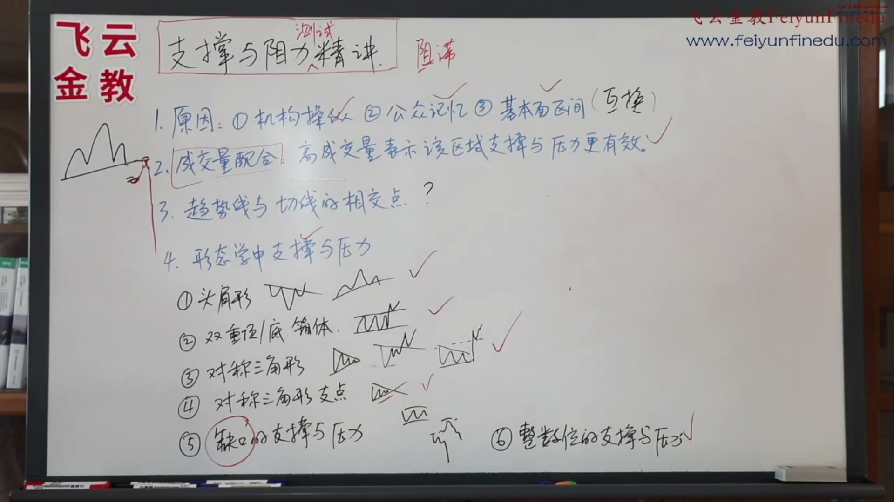
缺口你们去复盘一下就行了 我再给大家 上升的缺口 下降的缺口 比如说这是一个头肩形态 突然开盘下第一个 它就写个缺口 这个缺口那你要不要做 肯定做空 但是做空你盘下回来了 那么你在这缺口设止损 止损上去之后 在这儿你怎么办 遇到信号继续开通 这个时候流弹就下来了 就是这个意思 实战里面就这么用 遇到缺口果断沿着缺口开仓 错误止损 砍掉缺口回补 马上继续沿着缺口方向做 这个概率是很大的 好 这就是我们本期的支撑与压力测试金奖